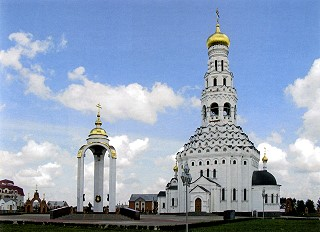

Если в полосе советского Центрального фронта после начала своего наступления 5 июля 1943 г. немцы не смогли глубоко вклиниться в оборону наших войск, то на южном фасе Курской дуги сложилась критическая обстановка. Здесь в первый день противник ввел в сражение до 700 танков и штурмовых орудий, поддержанных авиацией. Встретив отпор на обояньском направлении, противник перенес главные усилия на прохоровское направление, пытаясь захватить Курск ударом с юго-востока. Советское командование решило нанести контрудар по вклинившейся вражеской группировке. Воронежских фронт был усилен резервами Ставки (5-й гвардейской танковой и 45-й гвардейской армиями и двумя танковыми корпусами). 12 июля в районе Прохоровки произошло самое крупное танковое сражение 2- мировой войны, в котором с обеих сторон участвовало до 1200 танков и самоходных орудий. Советские танковые части стремились вести ближний бой («броня к броне»), поскольку дистанция поражения 76 мм орудия Т-34 была не более 800 м, а у остальных танков еще меньше, тогда как 88 мм пушки «Тигров» и «Фердинандов» поражали наши бронемашины с расстояния 2000 м. При сближении наши танкисты несли большие потери. Обе стороны понесли под Прохоровкой огромные потери. В этом сражении советские войска потеряли 500 танков из 800 (60%). Немцы потеряли 300 танков из 400 (75%). Для них это была катастрофа. Теперь самая мощная ударная группировка немцев была обескровлена. Генерал Г. Гудериан, в то время генерал-инспектор танковых войск вермахта, писал: «Бронетанковые войска, пополненные с таким большим трудом, из-за больших потерь в людях и технике на долгое время вышли из строя...и уже больше на Восточном фронте не было спокойных дней». В этот день произошел перелом в развитии оборонительного сражения на южном фасе Курского выступа. Основные силы противника перешли к обороне. 13-15 июля немецкие войска продолжали атаки лишь против частей 5-й гвардейской танковой и 69-й армий южнее Прохоровки. Максимальное продвижение немецких войск на южном фасе достигло 35 км. 16 июля они начали отход на исходные позиции.
Оценки боевых потерь в различных источниках сильно отличаются. Генерал Ротмистров утверждает, что за день из строя было выведено с обеих сторон около 700 танков. Официальная советская «История Великой Отечественной войны» приводит сведения о 350 подбитых немецких машинах. Г. Олейников критикует эту цифру, по его подсчётам в сражении не могло принимать участие больше 300 немецких танков. Советские потери он оценивает в 170—180 машин. Согласно докладу, который представил по итогам сражения Сталину представитель Ставки А. М. Василевский, «в течение двух дней боёв 29-й танковый корпус Ротмистрова потерял безвозвратными и временно вышедшими из строя 60 % и 18-й танковый корпус — до 30 % танков».
В память о погибших под Прохоровкой 3 мая 1995 года к 50-летию Победы в Великой Отечественной войне в Прохоровке был открыт Храм Святых Апостолов Петра и Павла (день празднования этих святых приходится на 12 июля, день сражения). На мраморных плитах его стен высечены имена 7 тысяч погибших здесь воинов. К югу от самой Прохоровки на железнодорожной магистрали Москва-Курская — Белгород были открыты платформы Звонница и Танковое поле. Объекты, возведённые в Прохоровке в память о подвиге советского народа в Курской битве, объединены в музей-заповедник «Прохоровское поле».
В официальной историографии есть четкая дата начала сражения под Прохоровкой – 12 июля 1943 года, день, когда советская армия начала контрнаступление. Однако есть источники, которые указывают, что бои на прохоровском направлении велись уже на третий день после начала немецкого продвижения на Курской дуге, поэтому допустимо считать датой началом сражения возле станции Прохоровка 10 июля, день когда немецкие войска начали прорыв тылов армейской полосы обороны с целью занять Прохоровку. 12 июля же может считаться кульминацией, «дуэлью танков», однако, закончившись с неясными результатами, она продолжалась вплоть до 14 июля. Завершением же битвы под Прохоровкой называют 16 июля 1943 года, даже ночь 17 июля, когда немцами был начато отступление.
Основными участниками «танковой дуэли», прошедшей 12 июля 1943 года у Прохоровки, называются 5-я танковая армия, которой командовал генерал-лейтенант Павел Ротмистров, и 2-й танковый корпус СС, которым командовал группенфюрер СС Пауль Хауссер. По данным, предоставленным немецкими генералами, в бою участвовали около 700 советских машин. Другие данные называют цифру в 850 советских танков. С немецкой стороны историки называют цифру в 311 танков, хотя в официальной советской историографии присутствует цифра в 350 только уничтоженных немецких бронемашин. Однако сейчас историками предоставляются сведения о явном завышении этой цифры, они считают, что только около 300 танков могло участвовать с немецкой стороны. В любом случае, в сражении под Прохоровкой сошлось около тысячи танков. Именно здесь немцы впервые использовали телетанкетки.
В советские времена распространение получила версия о том, что наши танки были атакованы немецкими «Пантерами». Однако последние исследования говорят о том, что «Пантер» вообще не было в Прохоровском сражении. Вместо них немцы «натравили» на советских солдат «Тигры» и …. «Т-34», трофейные машины, которых в бою было 8 с немецкой стороны.